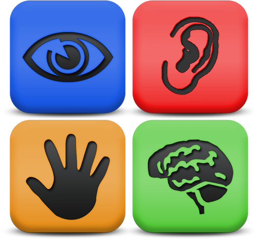

信息无障碍概述
张昆 @SIAA
本文档链接：https://hbwhzk.github.io/a11y-intro
其它设备阅读，请扫描下面的二维码
信息无障碍 -- Accessibility

任何人在任何情况下都能平等的、便利、无障碍地获取信息、利用信息。
信息的无障碍 -- 不是一种行为或状态，而是指，进入、访问信息的自由选择和使用权利。
为什么我们应该考虑信息无障碍
在中国，有超过8000万的残障人士；
弱势群体，以及受制于环境的用户：
- 2.1亿老龄化人口；
- 5%-10%的读写障碍人群；
- 第二语言人群；
- 低教育程度。
信息鸿沟，以及种类繁多的互联网产品：
- 9亿活跃移动设备；
- 网络不通达；
- 对互联网不熟悉。
构建信息无障碍的意义
从商务角度看信息无障碍：
- 品牌需求；
- 公益性；
- 竞争力；
- 国际法规、法律的强制性；
从业务角度上看信息无障碍：
- 易用性思维；
- 产品的通用性；
- 搜索引擎优化;
- 为所有人，做一件正确的事。
业界标准
WCAG （Web Content Accessibility Guidelines）2.0
中文授权翻译:Web内容无障碍指南(WCAG) 2.0
- W3C推荐标准，同时也是ISO标准;
- 广泛运用在Web内容、应用与及网站运营;
- 前瞻性的设计思路;
- 可运用在软件、移动设备等；
WCAG 2.0 支持文档
业界标准
Accessible Rich Internet Applications (WAI-ARIA)1.0
可及性富互联网应用1.0，让动态Web内容更无障碍
- 定义了可以描述widget和网页结构的角色
- 拖拽类的资源、目标的属性界定
- 为Web对象和事件提供键盘导航
WAI-ARIA 1.0 支持文档
业界标准
ATAG - Authoring Tool Accessibility Guidelines 2.0
创作工具无障碍指南，是针对于开发者使用的创作工具
主要有两个部分:
- 确保创作工具对于残障人士是无障碍;
- 让创作工具可以生产出无障碍的内容。
支持文档: 实施ATAG 2.0;
信息无障碍的四大原则
- 可感知性
- 可操作性
- 可理解性
- 鲁棒性
可感知：信息和用户界面组件以可感知的方式呈现给用户
- 替代文本 -- 为非文本内容提供替代文本
- 时基媒体 -- 为时基媒体提供替代
- 适应性 -- 创建可用不同方式呈现的内容
- 可辨别 -- 让用户通过视觉或听觉接受信息
可操作：用户界面上的组件和导航是可以操作的
- 键盘可访问 -- 能通过键盘操作所有功能
- 充足的时间 -- 为用户提供足够的时间
- 癫痫 -- 不要设计会导致癫痫发作的内容
- 可导航性 -- 帮助用户导航、查找内容、确定位置
可理解：信息和用户界面操作必须是可理解的
- 可读 -- 文本内容可读可理解
- 可预测 -- 以可预见的方式呈现内容
- 辅助输入 -- 帮助用户避免和纠正错吴
鲁棒：内容可被各种用户代理所理解
- 兼容 -- 兼容各类的用户代理
达成信息无障碍的部分基本技巧
- 注意提供替代性文本和内容；
- 清晰的布局、可以快速定位；
- 考虑一些特定的输入方式；
- 焦点的可视化；
- 为音视频内容提供字幕；
- 前景和背景的对比度；
- 避免用颜色引导内容；
- 为用户提供充足的时间操作；
- 小心使用验证码 CAPTCHAs；
- 注意闪烁内容；
- 正确使用标签。